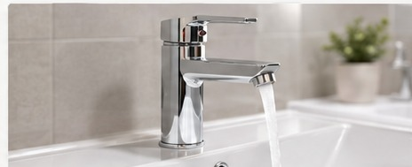
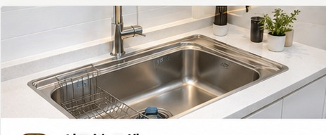
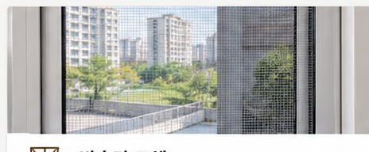
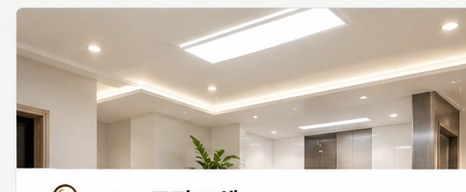

🚿 욕실·화장실 리모델링
오래된 욕실의 분위기와 사용성을 바꾸는 욕실 및 화장실 리모델링 작업을 진행합니다.
양주를 중심으로 의정부·포천·동두천·연천까지
꼼꼼하고 깔끔하게 찾아가는 출장 집수리
작은 수리부터 욕실과 주방 작업까지 현장에 맞춰 진행합니다.
오래된 욕실의 분위기와 사용성을 바꾸는 욕실 및 화장실 리모델링 작업을 진행합니다.

주방과 욕실 수전 교체부터 누수와 사용 불편을 확인하고 현장에 맞게 작업합니다.

욕실과 주방 등 필요한 공간의 타일 작업을 꼼꼼하게 진행합니다.

오래된 싱크볼 교체 및 주방 사용 환경에 맞춘 부분 집수리를 진행합니다.

찢어지거나 노후된 방충망을 교체하여 쾌적한 실내 환경을 만들어드립니다.

기존 조명을 LED 조명으로 교체하고 공간에 맞는 밝기를 고려해 작업합니다.
옥정홈마스터는 경기북부 지역을 직접 찾아가는 출장 집수리 전문 업체입니다.
단순히 부품 하나를 교체하는 것에서 끝나는 것이 아니라 현재 문제가 무엇인지 확인하고 현장에 맞는 방법을 안내해드립니다.
상담부터 작업 마무리까지 과정을 확인할 수 있습니다.
필요한 수리 내용을 전화로 상담합니다. 사진이 있다면 함께 확인할 수 있습니다.
현장의 상태와 필요한 작업 범위를 꼼꼼하게 확인합니다.
작업 범위를 확인한 뒤 필요한 부분을 순서대로 작업합니다.
작업 상태를 다시 확인하고 주변을 정리한 뒤 마무리합니다.
양주를 중심으로 경기북부 지역을 찾아갑니다.
위 지역 외 경기북부 지역도 출장 가능 여부를 상담해 주세요.
생활 속에서 갑자기 필요한 집수리, 가까운 전문가에게 편하게 상담해보세요.
양주 지역에서 주방이나 욕실 수전이 오래되어 교체가 필요한 경우 현장 상태를 확인하고 필요한 작업을 진행합니다.
의정부 지역의 노후 방충망이나 찢어진 방충망을 교체하고 생활 공간에 맞는 작업 방법을 안내해드립니다.
포천 지역 욕실의 노후 상태와 필요한 공정을 확인하여 욕실 및 화장실 리모델링을 진행합니다.
동두천과 연천을 비롯한 경기북부 지역에서 수전, 타일, 방충망, LED조명 등 다양한 생활 집수리 서비스를 제공합니다.
지역과 작업 내용을 확인하고 필요한 집수리를 상담해보세요.